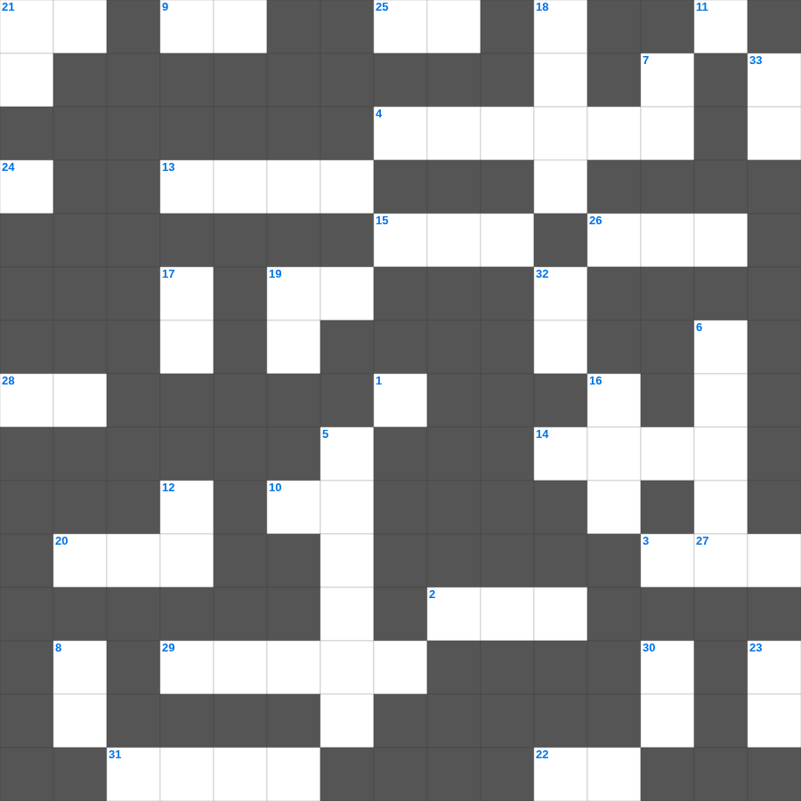

예레미야 애가 마스터 50
📌 서비스 정의
십자가로세로는 교회 주보와 주일학교에서 사용할 수 있는 성경 기반 가로세로 퍼즐 서비스입니다. 성경 인물, 사건, 핵심 구절을 바탕으로 제작되었습니다. 온라인 풀이 및 인쇄 기능을 제공합니다.
📖 예레미야란?
예레미야는 유다의 멸망을 눈물로 예언한 '눈물의 선지자'의 메시지를 담은 책으로, 회개의 촉구와 새 언약에 대한 소망을 함께 전합니다.
📚 예레미야의 주요 사건·주제
예레미야의 소명 · 거짓 선지자들과의 대립 · 유다의 멸망 예언 · 새 언약 예언(예레미야 31장) · 예루살렘 함락
오늘은 예레미야의 주요 내용을 담은 예레미야 주일학교 퀴즈를 준비했습니다. 총 35개의 힌트가 있으며, 주일학교 교재나 성경공부 자료로 활용하기 좋습니다. 무료로 즐기는 예레미야 가로세로 퍼즐을 지금 바로 풀어보세요!

📝 가로 힌트
1. 사람이 하나님께서 그에게 주신 바 그 일평생에 먹고 마시며... 수고하는 것이 이것하고 아름다움을 내가 보았나니
2. 너희가 자유를 위하여 부르심을 입었으나 그 자유로 육체의 기회를 삼지 말고 오직 사랑으로 서로 이것 하라
3. 성령의 새롭게 하심을 무엇이라고 표현했나: 중생의 이것
4. 벧엘 제단이 갈라질 것을 예언한 '유다에서 온 이것'
9. 그러나 원수 같이 생각하지 말고 이것 같이 권면하라
10. 디모데 속에 있는 은사를 다시 불일듯 하게 하기 위해 바울이 행한 것
13. 바울이 로마로 압송될 때 배를 타고 가다 만난 광풍의 이름
14. 뒤를 돌아보다가 소금 기둥이 된 사람
15. 요셉의 두 아들 중 장자
19. 욕심이 잉태한즉 죄를 낳고 죄가 장성한즉 이것을 낳느니라
20. 죽은 나사로의 누이 중 예수께 '주께서 여기 계셨더라면 내 오라버니가 죽지 아니하였겠나이다'라고 먼저 말한 자
21. 이것들을 증언하신 이가 이르시되 내가 진실로 속히 오리라 하시거늘
22. 너희 죄를 서로 이것하며 병이 낫기를 위하여 서로 기도하라
24. 베드로후서 1장 18절: 변화산 사건을 증언하며 사용한 지명 '거룩한 이것'
25. 동방박사들이 별을 보고 찾아와 경배한 날
26. 속죄제물의 피를 찍어 뿌리는 휘장 앞 횟수
27. 그들이 허탄한 자랑의 말을 토하며 그릇되게 행하는 사람들에게서 겨우 피한 자들을 이것으로 유혹하는도다
28. 노아의 막내 아들
29. 예수께서 그리스도이심을 부인하는 자가 누구냐 아버지와 아들을 부인하는 그가 이것이니라
31. 모세가 시내산에서 금송아지 사건 때 중보하며 이것한 기간
📝 세로 힌트
5. 하나님과 사람 사이의 유일한 중보자
6. 모세의 이름 뜻 '내가 그를 물에서 이것 하였음이라'
7. 니고데모에게 성령으로 나는 것을 무엇에 비유하셨나 (어디서 와서 어디로 가는지 알지 못함)
8. 베드로의 이 사람이 열병으로 누운 것을 보시고 예수께서 고쳐 주시니
11. 범사에 네 자신이 선한 일의 이것이 되며 교훈에 부패하지 아니함과 정중함과
12. 야곱의 넷째 아들, 유다 지파의 조상
16. 요한일서 5장 14절: 무엇대로 구하면 들으시는가
17. 지극히 큰 영광 중에서 '이는 내 사랑하는 아들이요 내 기뻐하는 자라' 하실 때에 그가 하나님 아버지께 존귀와 이것을 받으셨느니라
18. 발람의 나귀가 말을 한 기적
19. 내가 이것의 입에서 구조되었느니라
21. 이스라엘 역사상 가장 악한 왕으로 평가받는 자
23. 하나님의 이름을 모독하고 저주한 자의 형벌
30. 주의 사자가 요셉에게 현몽하여 아기를 데리고 이것으로 피하여 내가 네게 이르기까지 거기 있으라
32. 레위기는 누구에게 주신 말씀인가
33. 말씀이 이것이 되어 우리 가운데 거하시매 우리가 그의 영광을 보니 아버지의 독생자의 영광이요
📖 함께 읽으면 좋은 성경사전
퍼즐을 풀기 전에 읽으면 힌트가 쉬워지고, 풀고 나서 읽으면 내용을 한 번 더 복습할 수 있습니다.
🧩 이 퍼즐에서 배우는 내용
이 퍼즐은 예레미야 애가 마스터 50의 핵심 단어와 개념을 자연스럽게 복습할 수 있도록 구성되었습니다. 주일학교 수업이나 개인 성경공부에서 학습 내용을 점검하는 용도로 바로 활용할 수 있습니다.
🧑🏫 교회 교육 자료 활용
이 퍼즐은 주일학교 교재 추천 자료로 활용할 수 있고, 주일학교 주보에 넣기 좋은 분량으로 구성되어 있습니다. 수업용 주일학교 교안에 활동지로 붙이거나, 예배 후 복습용 주일학교 공과교재로 바로 사용할 수 있습니다.
🏷️ 키워드
예레미야 주일학교 퀴즈, 예레미야, 십자가로세로, 성경퀴즈, 말씀퀴즈, 가로세로퍼즐, 주일학교 교재 추천, 주일학교 주보, 주일학교 교안, 주일학교 공과교재